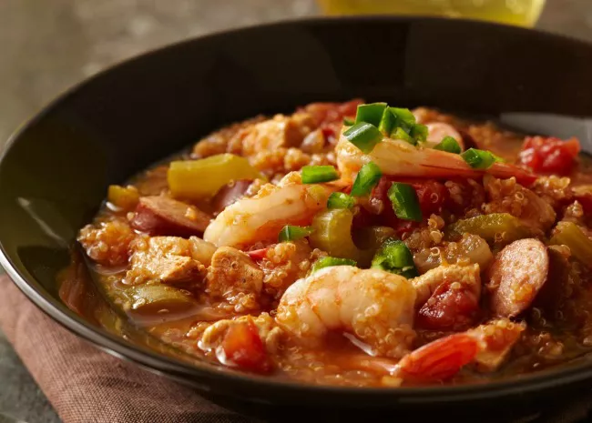

Jambalaya

Best Jambalaya
A spicy jambalaya with chicken, andouille sausage, rice, and Cajun seasonings that's easy to make in one pot.
This jambalaya recipe is savory, spicy, and oh-so satisfying. The Allrecipes community can't get enough of the top-rated jambalaya — it has earned more than 1,000 rave reviews from happy home cooks.
Ingridients
- Oil: Chicken and andouille sausage are sautéed in peanut oil.
- Sausage: Opt for andouille sausage for the most authentic jambalaya.
- Chicken: Cut one pound of boneless, skinless chicken breasts into 1-inch pieces.
- Spices and seasonings: This chicken and sausage jambalaya is flavored with Cajun seasoning, fresh garlic, red pepper flakes, salt, pepper, hot sauce, Worcestershire sauce, and file powder.
- Vegetables: You'll need an onion, green bell peppers, and celery.
- Rice: Opt for plain white rice for this jambalaya recipe.
- Broth: Use store-bought or homemade chicken broth to cook the rice.
How to Make Jambalaya
You'll find the full, step-by-step recipe below – but here's a brief overview of what you can expect when you make this tried-and-true chicken and sausage jambalaya:
- Cook the meat: Season the sausage and chicken pieces with Cajun seasoning. Sauté the sausage until browned, then remove with a slotted spoon and set aside. Sauté chicken until lightly browned on all sides. Remove with a slotted spoon and set aside.
- Coock the vegetables: In the same pot, sauté the onion, celery, bell pepper, and garlic until tender. Stir in the crushed tomatoes and seasonings. Add the meat and cook for 10 minutes.
- Add the rice: Stir in the rice and chicken broth. Bring to a boil, reduce the heat, and cook until all the liquid is absorbed.